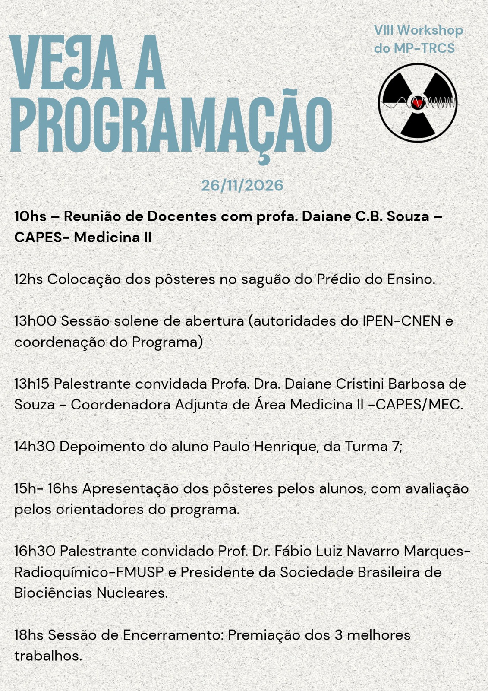

VIII Workshop do Mestrado Profissional: Programação e Orientações
Atividade acadêmica obrigatória para os discentes do MP-TRCS será realizada em 26 de novembro de 2026, no Prédio do Ensino

A Comissão de Pós-Graduação do Mestrado Profissional em Tecnologia das Radiações em Ciências da Saúde (MP-TRCS) do IPEN-CNEN informa a programação do VIII Workshop do Mestrado Profissional, que ocorrerá no dia 26 de novembro de 2026.
O Workshop é uma atividade acadêmica anual de caráter obrigatório para os alunos do programa. O evento é estruturado no formato de congresso científico, constituindo uma oportunidade para que os discentes apresentem o andamento de suas pesquisas e os produtos técnicos e tecnológicos desenvolvidos no curso.
Participação da CAPES e Palestrantes Convidados
Nesta edição, o evento contará com a participação da Profa. Dra. Daiane Cristini Barbosa de Souza, Coordenadora Adjunta da Área de Medicina II da CAPES/MEC, que estará presente nas seguintes atividades:
- 10h00: Reunião com os docentes do MP-TRCS sobre critérios e acompanhamento da área de Medicina II;
- 13h15: Palestra dirigida aos alunos, orientadores e pesquisadores do programa.
A programação da tarde também contempla:
- 14h30: Depoimento do aluno Paulo Henrique, da Turma 7;
- 16h30: Palestra do Prof. Dr. Fábio Luiz Navarro Marques (Radioquímico da FMUSP e Presidente da Sociedade Brasileira de Biociências Nucleares – SBBN);
- 18h00: Premiação dos três melhores trabalhos avaliados durante a sessão de pôsteres.
Programação Completa (26/11/2026)
| Horário | Atividade | Local / Participantes |
|---|---|---|
| 10h00 | Reunião de Docentes com a CAPES | Profa. Dra. Daiane C. B. Souza (CAPES Medicina II) e docentes do MP-TRCS |
| 12h00 | Montagem dos Pôsteres | Saguão do Prédio do Ensino |
| 13h00 | Sessão Solene de Abertura | Direção do IPEN–CNEN e Coordenação do Programa |
| 13h15 | Palestra Convidada | Profa. Dra. Daiane Cristini Barbosa de Souza (Coordenadora Adjunta Medicina II – CAPES/MEC) |
| 14h30 | Depoimento de Aluno | Paulo Henrique (Turma 7) |
| 15h00 – 16h00 | Apresentação de Pôsteres e Avaliação | Apresentação dos alunos avaliada pelos orientadores do programa |
| 16h30 | Palestra Convidada | Prof. Dr. Fábio Luiz Navarro Marques (Radioquímico–FMUSP e Presidente da SBBN) |
| 18h00 | Encerramento e Premiação | Divulgação e entrega de certificados aos 3 melhores trabalhos |
Orientações para os Alunos
A participação no Workshop e a apresentação de pôster constituem atividade acadêmica obrigatória para a conclusão do curso no MP-TRCS.
Os discentes devem observar o seguinte cronograma:
- Instalação dos painéis: os pôsteres devem ser fixados impreterivelmente às 12h00, no saguão do Prédio do Ensino;
- Arguição: os autores devem permanecer junto aos seus respectivos painéis durante todo o período das 15h00 às 16h00 para atendimento à comissão avaliadora e ao público;
- Avaliação: a comissão de orientadores atribuirá notas aos trabalhos considerando rigor metodológico, clareza na exposição e relevância dos resultados para a área da saúde;
- Premiação: no encerramento, às 18h00, serão anunciados os 3 trabalhos mais bem pontuados.